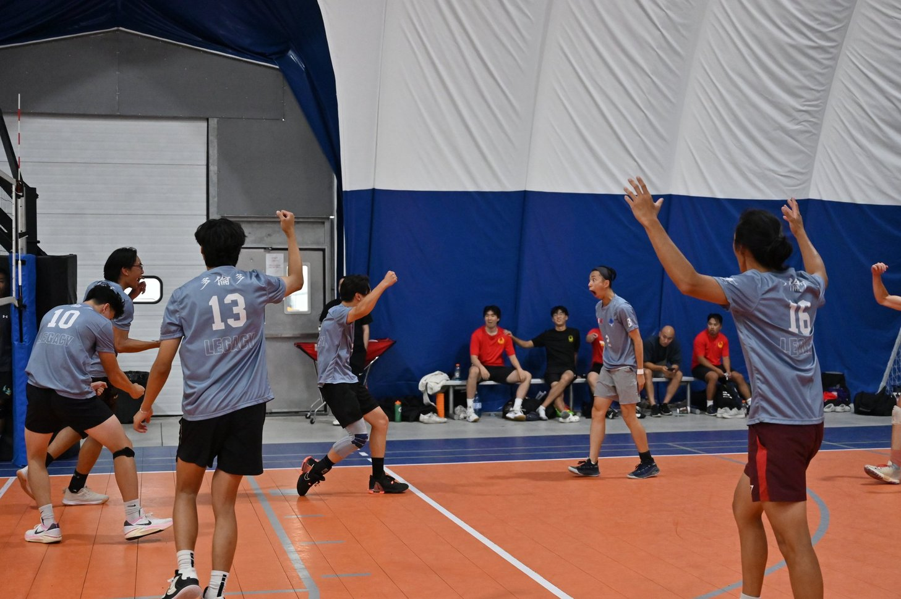
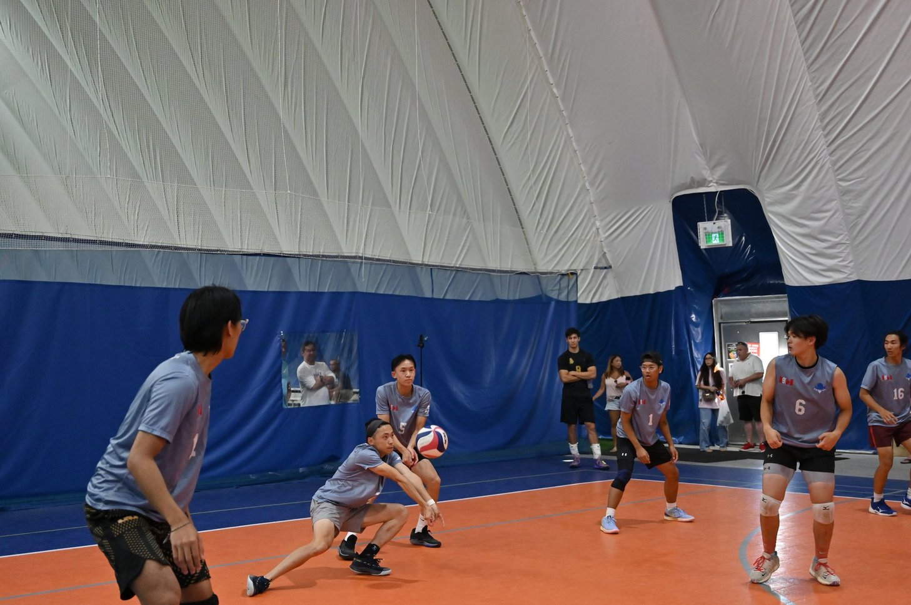

the best sport (ever)
As the title suggests, I love playing volleyball! I started playing when I was 12 and the only regret is that I didn't start sooner or play ova. I'm primarily self taught (thank you coach donny) and occasionally post to my volleyball ig :)
In the summer of 2023, I tried playing a variation of traditional volleyball (6v6) called 9-man, which is like regular volleyball but played with a slightly larger court, 9 players on each side, and modified rules (see here). The "streetball" style of the sport instantly got me hooked and is one of the things I look forward to every summer.
gallery
im a very supportive teammate :D
photos taken at the second local 9man tournament of my first season  